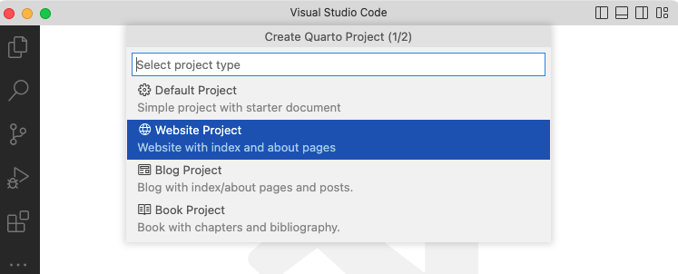
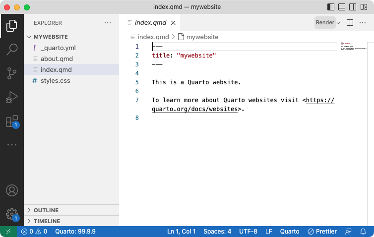

Creating a Website
Overview
Quarto Websites are a convenient way to publish groups of documents. Documents published as part of a website share navigational elements, rendering options, and visual style.
Website navigation can be provided through a global navbar, a sidebar with links, or a combination of both for sites that have multiple levels of content. You can also enable full text search for websites.
Quarto websites can be published to a wide variety of destinations including GitHub Pages, Netlify, Posit Connect, or any other static hosting service or intranet web server. See the documentation on Publishing Websites for additional details.
Quick Start
Follow the Quick Start for your tool of choice to get a simple website up and running. After covering the basics, read on to learn about website navigation and other more advanced website features.
To create a new website project within VS Code, execute the Quarto: Create Project command from the command-palette:

Then, select Website Project:

You’ll be prompted to select a parent directory to create the project within. Then, you’ll be asked to name the directory for your website project:

The new website project will be created and opened within VS Code. Click the Render button to preview the website:

The preview will show to the right of the source file. As you re-render index.qmd or render other files like about.qmd, the preview is automatically updated.
To create a new website project within RStudio, use the New Project command and select Quarto Website:

Then, provide a directory name and other relevant options for the website:
![A section of the 'New Project Wizard' menu from Rstudio. This section is titled 'Create Quarto Website'. The Quarto logo is displayed on the left. On the right are fields for 'Directory name', and 'Create project as subdirectory of:'. Underneath that are options for 'Engine'. The option for 'Engine' is set to 'None'. Underneath are options for 'Create a git repository', and 'Use visual markdown editor'.There are buttons for 'Create Project' and 'Cancel' arranged side-by-side in the bottom right of the window. There is an option to 'Open in new session' in the button left corner.](images/rstudio-project-website-options.png)
Click the Render button to preview the website:
The preview will show to the right of the source file. As you re-render index.qmd or render other files like about.qmd, the preview is automatically updated.
To create a new website project from the Terminal, use the quarto create project command, following the prompt to select the type and to provide a name for the project (will be used as the directory name):
Terminal
quarto create project website mysiteThis will create the scaffolding for a simple website in the mysite sub-directory. Use the quarto preview command to render and preview the website:
Terminal
quarto preview mysiteThe website preview will open in a new web browser. As you edit and save index.qmd (or other files like about.qmd) the preview is automatically updated.
Workflow
Above we have demonstrated how to create and edit a simple website. In this section we go into more depth on website workflow.
Config File
Every website has a _quarto.yml config file that provides website options as well as defaults for HTML documents created within the site. For example, here is the default config file for the simple site created above:
_quarto.yml
project:
type: website
website:
title: "today"
navbar:
left:
- href: index.qmd
text: Home
- about.qmd
format:
html:
theme: cosmo
css: styles.css
toc: trueSee the documentation on Website Navigation and Website Tools for additional details on website configuration. See HTML Documents for details on customizing HTML format options.
Website Preview
If you are using VS Code or RStudio, the Render button automatically renders and runs quarto preview in an embedded window. You can also do the same thing from the Terminal if need be:
Terminal
# preview the website in the current directory
quarto previewNote that when you preview a site (either using VS Code / RStudio integrated tools or from the terminal) changes to configuration files (e.g. _quarto.yml) as well as site resources (e.g. theme or CSS files) will cause an automatic refresh of the preview.
You can customize the behavior of the preview server (port, whether it opens a browser, etc.) using command line options or the _quarto.yml config file. See quarto preview help or the project file reference for additional details.
As you preview your site, pages will be rendered and updated. However, if you make changes to global options (e.g. _quarto.yml or included files) you need to fully re-render your site to have all of the changes reflected. Consequently, you should always fully quarto render your site before deploying it, even if you have already previewed changes to some pages with the preview server.
Website Render
To render (but not preview) a website, use the quarto render command, which will render the website into the _site directory by default:
Terminal
# render the website in the current directory
quarto render See the Project Basics article to learn more about working with projects, including specifying an explicit list of files to render, as well as adding custom pre and post render scripts to your project.
Linking
When creating links between pages in your site, you can provide the source file as the link target (rather than the .html file). You can also add hash identifiers (#) to the source file if you want to link to a particular section in the document. For example:
[about](about.qmd)
[about](about.qmd#section)One benefit of using this style of link as opposed to targeting .html files directly is that if you at some point convert your site to a book the file-based links will automatically resolve to section links for formats that produce a single file (e.g. PDF or MS Word).